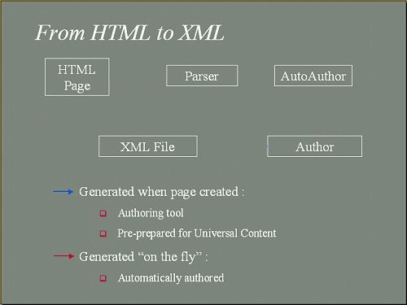

HTML to XML Conversion with Universal Content
[Note there is a 7 second pause between frames]
In the above diagram the conversion to XML process is illustrated. The source HTML page is rendered through a parser into a tree like structure of Java objects. We break the content into logically grouped objects in order to ensure compatibility under each client profile.
These objects are taken by the AutoAuthoring Engine which adds adapted the content for each client profile. This can be output directly as an XML file (ready to be interpreted by an appropriate XSL stylesheet) or it can be passed to the Authoring Tool for fine-tuning by the content provider or author.
© British Telecommunications plc, 1999